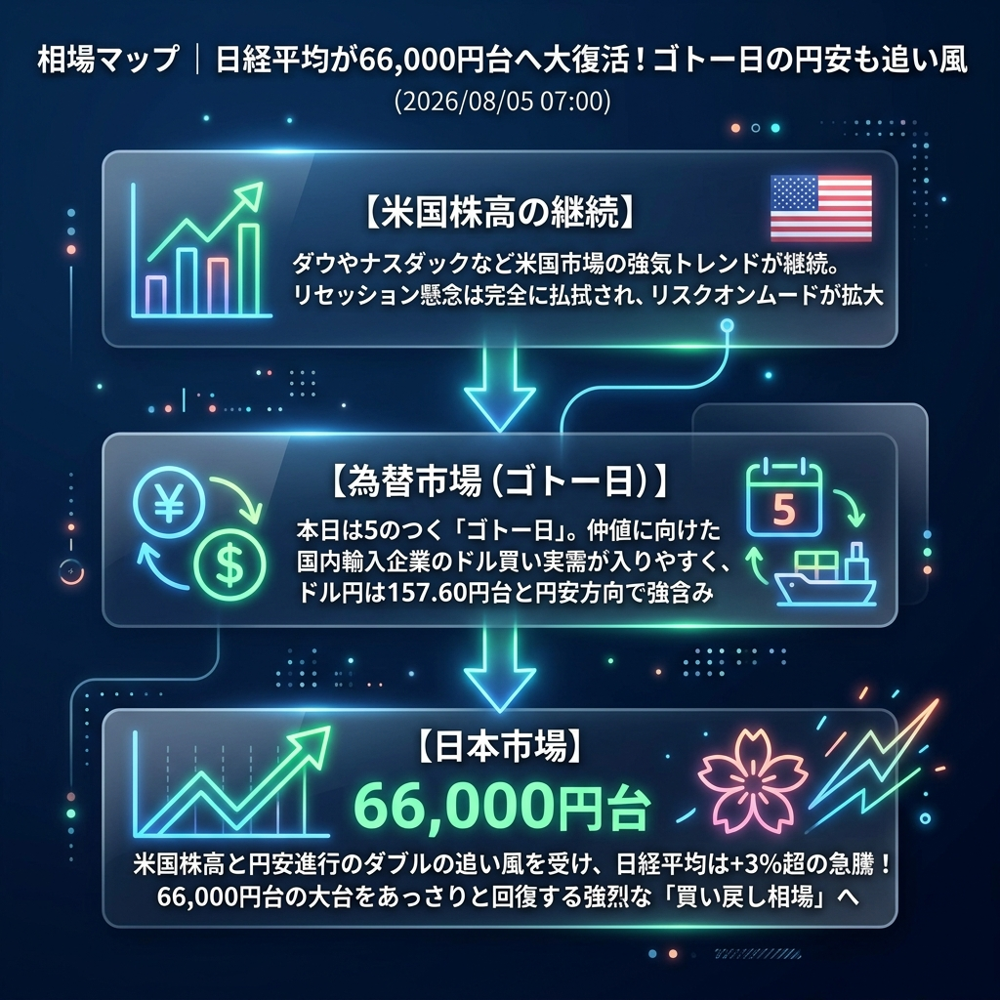

日経平均が66,000円台へと大復活を遂げています！
米国市場での強気トレンドの継続と、本日の「ゴトー日（5のつく日）」特有のドル買い（円安）需要が見事に重なり、日本株は猛烈な勢いで買い戻されています。先週から市場を覆っていた「パニック売り」は完全に過去のものとなり、大底（62,400円台）からあっという間に約4,000円幅の強烈なリバウンドを果たしています。
「日経平均の66,000円台回復」と「ゴトー日の円安支援」。
昨晩の米国市場では、ダウ・ナスダックともに堅調な推移を続けました。過度なリセッション懸念が払拭されたことで、リスクマネーが再び株式市場に流入しています。
為替市場では、本日が8月5日（ゴトー日）であることから、東京時間の仲値（09:55）に向けて輸入企業からのドル買い・円売りが入りやすい環境となっており、157円台後半（157.60円台）へと円安が進みました。これが日本株の急騰を強烈に後押ししています。
| 指数・銘柄 | 現在値 | 前回比（前日比） | 騰落率 | 確認事項 |
|---|---|---|---|---|
| S&P 500 (ES=F) | 7,785.50 | +128.00 | +1.67% | 力強い上昇 |
| Nasdaq (NQ=F) | 29,881.0 | +629.50 | +2.15% | ハイテク株への資金集中 |
| Dow (YM=F) | 54,401.0 | +353.0 | +0.65% | 堅調 |
| 日経225現物 | 66,016.57 | +2059.04 | +3.22% | 【猛烈な反発】66000円台回復！ |
| CME日経225先物 | 66,135.0 | +1605.0 | +2.49% | 先物主導の買い戻し |
| USD/JPY | 157.622 | +0.264 | +0.17% | ゴトー日の円安進行 |
| EUR/USD | 1.1533 | +0.0014 | +0.12% | 横ばい |
| 金 | 4,155.1 | +29.9 | +0.72% | 高値更新を窺う |
| 原油 | 75.70 | -1.45 | -1.88% | 上値重い |
| BTCUSD | 64,449.26 | +542.65 | +0.85% | 株高に連れ高 |